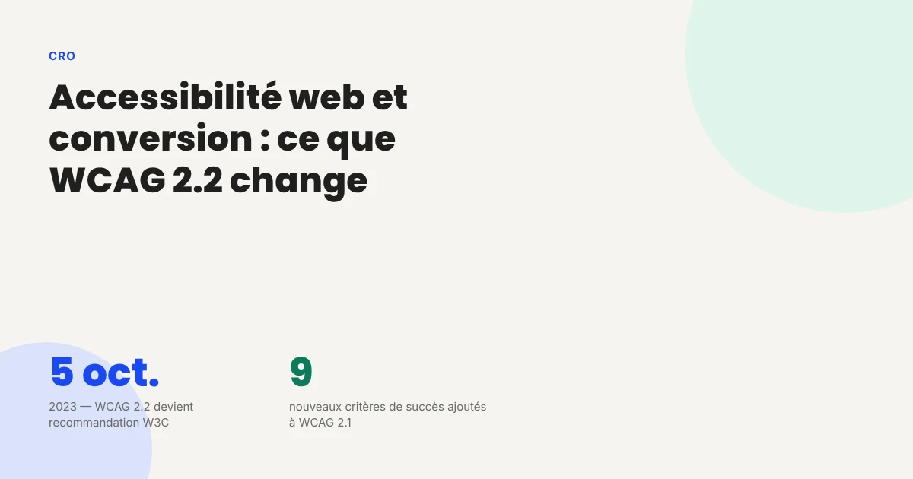

Accessibilité web et conversion : ce que WCAG 2.2 change vraiment
WCAG 2.2 est devenue recommandation officielle du W3C le 5 octobre 2023, avec 9 nouveaux critères de succès par rapport à WCAG 2.1. L'accessibilité est souvent vendue comme un levier de conversion universel. Ce qui est réellement démontré sur ce lien, et ce qui relève de l'argument marketing non sourcé.

L'accessibilité web revient régulièrement dans les argumentaires CRO sous une forme simplifiée : « rendre votre site accessible augmente vos conversions ». L'affirmation n'est pas fausse dans son principe, mais elle est rarement sourcée correctement, et elle mélange souvent deux choses distinctes : un standard technique précis (WCAG) et un bénéfice business qui dépend fortement du contexte. WCAG 2.2 est devenue recommandation officielle du W3C le 5 octobre 2023. Elle ajoute 9 nouveaux critères de succès par rapport à WCAG 2.1, et retire un critère obsolète (4.1.1 Parsing), pour un total de 86 critères. Une révision mineure, purement éditoriale et sans nouveau critère, a suivi le 12 décembre 2024.
Ce que WCAG 2.2 ajoute concrètement
Plusieurs des 9 nouveaux critères touchent directement des points d'interaction que le CRO classique traite déjà comme des irritants de conversion, indépendamment de toute considération d'accessibilité : la taille minimale des cibles tactiles (éviter les boutons trop petits ou trop rapprochés sur mobile), une aide contextuelle cohérente d'une page à l'autre d'un même parcours, et une saisie facilitée des données d'authentification (ne pas forcer un exercice cognitif ou mémoriel inutile pour se connecter ou s'inscrire). Ce chevauchement n'est pas un hasard : une bonne partie de ce que WCAG formalise pour les utilisateurs en situation de handicap correspond à des frictions qui pénalisent aussi un utilisateur valide dans un contexte dégradé — plein soleil sur un écran de smartphone, connexion lente, fatigue en fin de journée, usage à une seule main.
Ce qui est démontré, et ce qui ne l'est pas
C'est précisément là que l'argumentaire marketing dérape souvent : il n'existe pas d'étude causale rigoureuse qui isolerait l'accessibilité comme seule variable responsable d'une hausse de conversion généralisée, transposable d'un site à l'autre. Les chiffres spectaculaires qui circulent sans source précise (« +30 % de conversion grâce à l'accessibilité ») doivent être traités comme non vérifiables tant qu'ils ne sont pas rattachés à une étude nommée et datée, avec sa méthodologie. Ce qui est en revanche solidement documenté, ce sont les mécanismes eux-mêmes : un contraste de texte suffisant, une navigation clavier complète, des champs de formulaire correctement étiquetés et des messages d'erreur explicites servent objectivement plus d'utilisateurs que leur seule cible initiale. L'honnêteté intellectuelle impose de s'arrêter à ce niveau de preuve, pas d'extrapoler un pourcentage de conversion universel à partir d'un mécanisme réel mais non chiffré de façon généralisable.
Pourquoi le cadre réglementaire change la donne, indépendamment du CRO
Au-delà de l'argument conversion, l'accessibilité a un statut que peu d'autres sujets CRO partagent : elle peut devenir une obligation légale selon le secteur et la juridiction (RGAA en France, European Accessibility Act, Section 508 aux États-Unis, pour ne citer que les plus connus), avec des conséquences qui dépassent largement le taux de conversion. Un site qui doit se mettre en conformité n'a donc pas besoin d'un chiffre business pour justifier le chantier — la question à se poser est d'abord réglementaire, puis seulement ensuite, en bonus réel mais non quantifiable précisément, bénéfique à l'expérience de navigation dans son ensemble.
Ce qu'il faut réellement auditer en priorité
Pour une équipe qui veut traiter le sujet sérieusement sans attendre une refonte complète, les nouveaux critères de WCAG 2.2 donnent une liste de vérification concrète et priorisable : taille et espacement des zones cliquables sur mobile, cohérence des libellés d'aide à travers les pages d'un même tunnel, et simplicité des étapes d'authentification ou de double authentification. Ce sont des correctifs techniques précis, pas des promesses de croissance — leur valeur se mesure en frictions supprimées, pas en pourcentage de conversion inventé pour l'occasion.
FAQ
WCAG 2.2 est-elle obligatoire légalement ?
WCAG est un standard technique du W3C, pas une loi. Son caractère obligatoire dépend des réglementations locales qui s'y réfèrent (comme le RGAA en France ou l'European Accessibility Act), lesquelles peuvent viser une version et un niveau de conformité spécifiques (A, AA ou AAA). Il faut vérifier la réglementation applicable à son secteur plutôt que supposer qu'une version de WCAG s'impose automatiquement.
L'accessibilité web améliore-t-elle prouvé le taux de conversion ?
Il n'existe pas d'étude causale rigoureuse isolant l'accessibilité comme seule variable expliquant une hausse de conversion generalisée. Ce qui est documenté, ce sont des mécanismes de recouvrement directs : un contraste suffisant, une navigation clavier complète et des formulaires bien structurés servent autant un utilisateur en situation de handicap qu'un utilisateur valide dans un contexte dégradé (plein soleil, connexion lente, fatigue). Présenter un chiffre de hausse de conversion générique attribué à l'accessibilité sans source vérifiable relève du mythe marketing, pas du fait démontré.
Quel est le critère de succès WCAG 2.2 qui a le plus d'impact direct sur un tunnel de conversion ?
Plusieurs des 9 nouveaux critères ciblent directement des interactions de formulaire et de navigation : la taille minimale des cibles tactiles, l'aide contextuelle cohérente d'une page à l'autre, et la saisie facilitée des données d'authentification. Ce sont justement les points de friction les plus documentés en CRO classique, même en dehors de toute considération d'accessibilité.
Un tunnel de conversion à auditer sans promesse marketing invérifiable ?
Pour aller plus loin, voir la page CRO, et l'article vitesse mobile et seuil de conversion.
Pour continuer sur ce sujet.